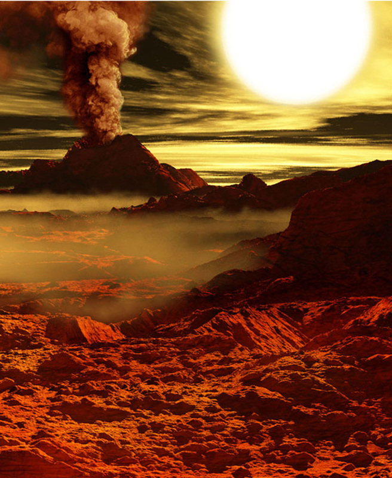

Vremea curentă Răstolţu Deşert, Sălaj, România | AccuWeather
- EGIPT: ?ara unde Soarele e frate cu de?ertul
EGIPT: ?ara unde Soarele e frate cu de?ertul. Luna de miere exoticã la Hurghada. Cei mai mul?i dintre români aleg sã-?i petreacã a?a zisa lunã de miere, care de cele mai multe ori se transfromã într-o sãptãmânã de concediu, cu harta în mânã. - Omul deşert | Viata ca un drog
Soarele şi luna …baladă populară culeasă de Gh. Dem. Teodorescu. Foaie de cicoare, În prunduţ de mare Iată că-mi răsare Puternicul Soare. Dar el nu-mi răsare, Ci va să se-nsoare; Că mi-a tot umblat Lumea-n lung şi-n lat, - Soarele | B.D.C
Soarele-mi vedea Şi îmărmurea, Şi se văieta, Năvodari chema, Năvod aducea Şi-n mare-l băga; Mulţi galbeni că da Să-i scoaţă dalba. Luptă ce-mi lupta În deşert erea, Că ei n-o găsea Şi n-o mai prindea; Făr' de... ce-mi scotea Şi-n năvod trăgea? O mreană de mare Cu solzii de zare. Pe mal d-o scotea, Pe mal d-o zvârlea, - Locul unde Soarele nu creează nicio umbră. Cum este ...
Virusologii au descoperit că razele ultraviolete (UV) pot distruge 90% dintr-o suprafață contaminată cu noul coronavirus, în aproximativ 30 minute, după ce o persoană infectată a strănutat sau a tușit acolo.. Studii separate au concluzionat că soarele poate distruge aproape în totalitate particulele de virus din aer în doar șase minute. - Soarele şi luna - Povesti Nemuritoare
Meditaţii în deşert care te pot bulversa psihic. În jurul meu nu este nici măcar o umbră. Nimic care să schimbe culoarea nisipului fierbinte. Aici, duşman îţi este soarele ce arde cu o intensitate incredibilă. Dușman îți este și vântul singuratic din deşert. El este compozitorul ce născoceşte muzica turbată. - Soarele poate distruge coronavirusul în 30 de minute ...
Oraşul e acum deşert sărăcăcios Iar soarele dispare ros de vină. În dansul şui al torţei dezlânate, Întreg Egiptul se animă în pereţi. Sub mâini de sclavi cad spicele înalte În cântul-rugă îngânat de cântăreţi Şi ziduri grele se despincă-n văl de fum Stânci risipite din nisipuri se adună, Se rânduiesc palate ... - „Soarele” – Tarta apetisantă din brânză de vaci şi ...
Download-uri Poze : om, natură, pădure, siluetă, Munte, deşert, umbră, întuneric, negru, artă, american, fundal, Curcan, hd, cowboy turci 2448x2448,1069612 - Soarele în citate, maxime, aforisme - diane.ro
Soarele şi luna A mai mitică, Ca o floricică, În mijloc şedea, La lucru lucra, Pe toate-ntrecea; Că ea tot ţesea. Ţesea, -nchindisea, Şi ea se numea Ileana Simzeana, Doamna florilor Ş-a garoafelor, Sora Soarelui, Spuma laptelui. Soare răsărea, Şi Soare-mi venea La gură d-argea. Cu dânsa vorbea, Frumos c-o-ntreba, Din gură-i zicea: - Soarele şi luna - versuri Balade Populare | Versuri.ro
Vector imagine de soarele străluceşte peste munte stânci. ... Soare în deşert. Vectorii sponsorizate . Descarcă . Descriere . Vector imagine de soarele străluceşte peste munte stânci. Categorii. Fundaluri. Licență . Politica de confiden?ialitate . Specificații. 0.58 MB. 2018-06-19 . - Reteta Desert cu bostan "Soarele" - Bucataras.RO
3. Se racesc . Intre timp se curata de coarja portocala in forma de spirala cu un cutit ingust si foarte bine ascutit. Coaja taiata de portocala se inroleaza in forma de floare si se prinde cu o scobitoare.

Răstolţu Deşert, Sălaj
20° C Utilizaţi locaţia dvs. curentă Locaţii recente 20° C Căutaţi locaţia setări Vreme Răstolţu Deşert, Sălaj Acum Radar Calitatea aerului MinuteCast Pe ore Zilnic LunarPe glob
Radar şi hărţi
Uragan
Condiţii meteorologice severe
Video
Noutăţi
Acum Radar Calitatea aerului MinuteCast Pe ore Zilnic Lună joi, 24 septembrieVremea curentă
11:08
20° C RealFeel® 23° RealFeel® 23° RealFeel Shade™ 20° Noros RealFeel Shade™ 20° Index UV maxim 2 Scăzut Vânt 0 km/h Rafale de vânt 0 km/h Umiditate 63% Punct de rouă 13° C Presiune 1012 mbar Nori 91% Vizibilitate 16 km Plafon 8800 mZi
25° Mx RealFeel® 28° RealFeel Shade™ 25° 24.09 O furtună în unele zoneIndex UV maxim 4 Moderat
Vânt S 6 km/h
Rafale de vânt 13 km/h
Probabilitate de precipitaţii 52%
Probabilitate de furtuni cu descărcări electrice 60%
Precipitaţii 3.4 mm
Ploaie 3.4 mm
Ore de precipitaţii 1.5
Ore de ploaie 1.5
Nori 59%
Dimineaţa
După-amiaza
Noapte
12° Mn RealFeel® 11° 24.09 Parţial norosVânt S 7 km/h
Rafale de vânt 13 km/h
Probabilitate de precipitaţii 25%
Probabilitate de furtuni cu descărcări electrice 5%
Precipitaţii 0.0 mm
Nori 40%
Seara
Noaptea
Soarele răsare/apune
12 ore
02 min.
Răsărit 07:18 Apus 19:208 ore
22 min.
Răsărit 15:44 Apus 00:06Istoric temperaturi
24.09 Ridicat Scăzut Prognoză 25° 12° Medie 20° 8° An ant. 22° 13°Mai în viitor
Pe ore
Zilnic
Lună
Pe glob
Radar şi hărţi
Uragan
Condiţii meteorologice severe
Video
Noutăţi
Lume Europa România Sălaj Răstolţu DeşertLocaţii în apropiere:
Agrij , Sălaj ; Bercea , Sălaj ; Bodia , Sălaj © 2020 AccuWeather, Inc. AccuWeather şi Sun Design sunt mărci comerciale înregistrate ale AccuWeather, Inc. Toate drepturile rezervate. Termeni de utilizare | Politica privind confidenţialitatea datelor | Politica privind modulele cookie | Declaraţie TAGAm actualizat Politica privind confidenţialitatea datelor şi Politica privind modulele cookie .
Am înţelesGet AccuWeather alerts as they happen with our browser notifications.
Enable Notifications No, ThanksNotifications Enabled
Thanks! We’ll keep you informed.



Mauris vulputate dolor
Rutrum fermentum nibh in augue praesent urna congue rutrum.
Etiam posuere